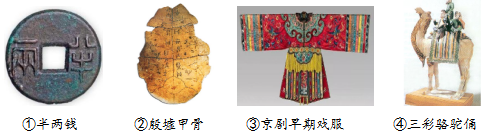
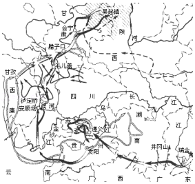

2019年北京市中考历史试题 · 选择题 第11、12、13、14、15题
11．（1.5分）以下文物按时间先后排序正确的是（ ）

A．①②③④B．②③④①C．②①④③D．①②④③
12．（1.5分）1839年，一位在广东的外国人说，鸦片是在最彻底的手段下被销毁了……全部事务的处理，在人类历史上必将永远是一个最为卓越的事件。他所说的事件是（ ）
A．戚继光抗倭B．虎门销烟
C．太平天国运动D．义和团运动
13．（1.5分）中国共产党在井冈山走出一条将马克思主义基本原理同中国革命具体实践相结合的道路。能够说明这一结论的是（ ）
A．国共两党合作发动北伐战争
B．中国共产党在南昌发动武装起义
C．开创第一个农村革命根据地
D．国共两党建立抗日民族统一战线
14．（1.5分）与以如图示意图直接相关的诗句是（ ）

A．扫除帝制建丰功，革命仍愁阻万重
B．红军不怕远征难，万水千山只等闲
C．自信挥戈能退目，河山依旧战旗红
D．太行浩气传千古，留得清漳吐血花
15．（1.5分）1943年，中国政府先后与美国、英国签署新条约，“取消了近代以来美、英在华的特权，随后荷兰、比利时等国相继放弃在中国的不平等权益”。这说明（ ）
A．抗日战争提升了中国的国际地位
B．反法西斯同盟取得了战争主动权
C．中国取得了反帝斗争的完全胜利
D．美英等国建立了公正的国际秩序